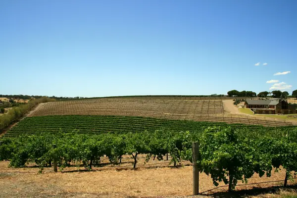

Home › Grapes › Syrah / Shiraz
Syrah / Shiraz grape

Photo: Mikael Andreasson on Unsplash
Syrah / Shiraz is a red grape known for blackberry, pepper, smoke. Its best-known homes are Rhône, Barossa, Washington.
Origin and history
From the northern Rhône; DNA shows it is a cross of Dureza and Mondeuse Blanche, two grapes from south-east France.
Where it grows
Hermitage, Côte-Rôtie and Cornas in the Rhône, Barossa and McLaren Vale in Australia, Washington State, Chile, South Africa and Hawke's Bay.
Structure
Full body, medium-plus to high tannin and medium acidity. Deep, inky colour.
Aromas, young and aged
Cool climates: blackberry, black pepper, olive and smoked meat. Warm climates (Shiraz): ripe plum, jam, chocolate and liquorice.
Ageing
Good examples age 5–15 years; top Hermitage and Barossa can go 20 years or more.
Also known as
Shiraz (Australia, South Africa).
Good to know
In Côte-Rôtie it is traditionally co-fermented with a little white Viognier, which brightens colour and aroma.
Wine regions for Syrah / Shiraz
Syrah / Shiraz wines to try
Real bottles from The Wine Library.
E. Guigal Côtes du Rhône Rouge
Rhône Valley · Côtes du Rhône · Syrah / Shiraz, Garnacha / Grenache, Mourvèdre
Generous and peppery: dark berries, spice and soft tannins.
Food: Sausages, cassoulet, pizza
Château de Beaucastel Châteauneuf-du-Pape Rouge
Rhône Valley · Châteauneuf-du-Pape · Mourvèdre, Garnacha / Grenache, Syrah / Shiraz
Deep and savoury: black fruit, garrigue herbs, leather and spice.
Food: Game, slow-cooked lamb
Paul Jaboulet Aîné Hermitage La Chapelle
Rhône Valley · Hermitage · Syrah / Shiraz
Powerful Syrah: blackberry, black olive, smoke and pepper.
Food: Venison, beef stew
Rockford Basket Press Shiraz
Barossa Valley · Syrah / Shiraz
Old-vine Barossa Shiraz: plum, blackberry, chocolate and spice.
Food: Barbecued lamb, beef
Gérard Bertrand Côte des Roses Rosé
Languedoc-Roussillon · Languedoc · Grenache Rosé, Cinsault, Syrah / Shiraz
Pale and fresh: redcurrant, citrus peel and a floral, gently saline finish.
Food: Grilled fish, salads, tapenade
Celler de Capçanes Mas Donís
Montsant · Garnacha / Grenache, Syrah / Shiraz
Juicy, sun-warmed Garnacha with ripe cherry, herbs and soft tannins. Easy and generous.
Food: Pizza, grilled sausages, lamb chops
Celler del Roure Les Alcusses
Valencia · Moixent · Monastrell, Garnacha Tintorera, Syrah / Shiraz, Cabernet Sauvignon
Mediterranean blend with dark berries, garrigue herbs and a smooth, savoury finish.
Food: Paella with rabbit, grilled meats, stews
Viña Altaïr Altaïr
Cachapoal Valley · Alto Cachapoal · Cabernet Sauvignon, Carménère, Syrah / Shiraz
Andean-foothill flagship, cassis, graphite and fresh herbs with fine, structured tannins.
Food: Rib-eye steak, lamb rack, aged cheese
Jiménez-Landi Sotorrondero
Méntrida · Syrah / Shiraz, Garnacha / Grenache
Ripe black fruit and pepper from granite hills near Toledo, polished by gentle oak.
Food: Roast lamb, venison stew, aged cheese
Viña Falernia Syrah Reserva
Cool desert-edge Syrah, peppery and floral with blackberry and a fresh finish.
Food: Pepper steak, lamb kebabs, duck
Similar red grapes
Explore all grapes in the interactive guide
The Wine Reference newsletter
New wines, stories and career guides, one email a week at most.
Over 18s only. Unsubscribe any time with one click. Your email is stored securely by Kit and never shared.
Support The Wine Reference
This guide is free, with no paywall. If it helped you choose a bottle, you can buy me a glass and keep it growing.
🍷 Buy me a glass